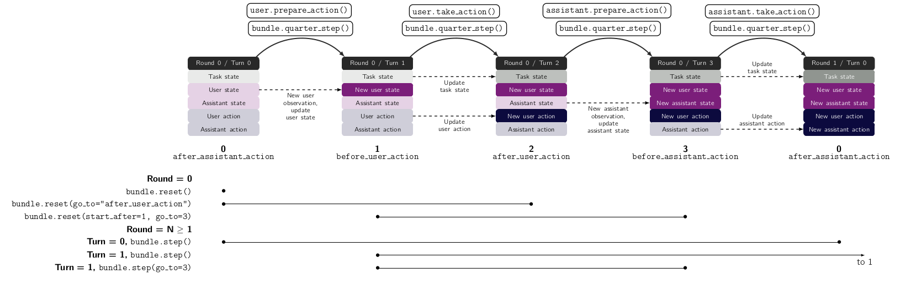

Bundles
Bundles are the objects that compose the three main components (task, user and assistant) into a game. It forms the joint state, collects the rewards and ensure synchronous sequential sequences of observations, inferences and actions of the two agents.

They are useful because they allow you to orchestrate the interaction how you want it.
In most cases, there is no need to define a new Bundle, and you can straightaway use the standard existing Bundle. For example, you can create a bundle and interact with it like so:
1
2
3class ExampleTaskWithoutAssistant(ExampleTask):
4 def on_assistant_action(self, *args, **kwargs):
5 return self.state, 0, False
6
7
8example_task = ExampleTaskWithoutAssistant()
9example_user = ExampleUser()
10bundle = Bundle(task=example_task, user=example_user)
11bundle.reset()
12
13while True:
14 state, rewards, is_done = bundle.step()
15 if is_done:
16 break
Overview of Bundle mechanisms
The main API methods are the same as gym’s, although their functionality is extended.
reset, which allows you to have control which components you reset and how you reset them.step, which allows you to specify how agents select their actions, and how many turns to play .render, which combines all rendering methods of the components.close, which closes the bundle properly.
The following graphic explicits how the most important options work
{kind=link}
Note
When stepping through a Bundle, you can pass user and assistant actions e.g. bundle.step(user_action = 1). Any action passed like this will take precedence over the agent’s sample method.